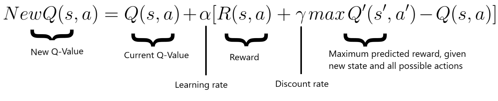
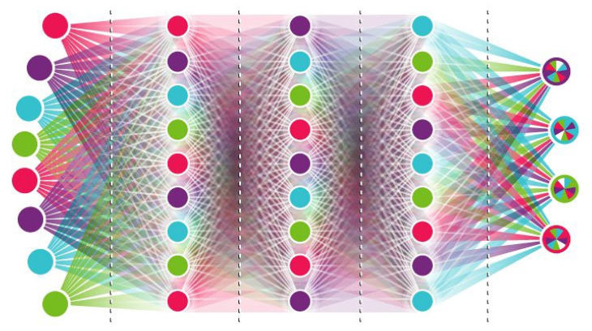
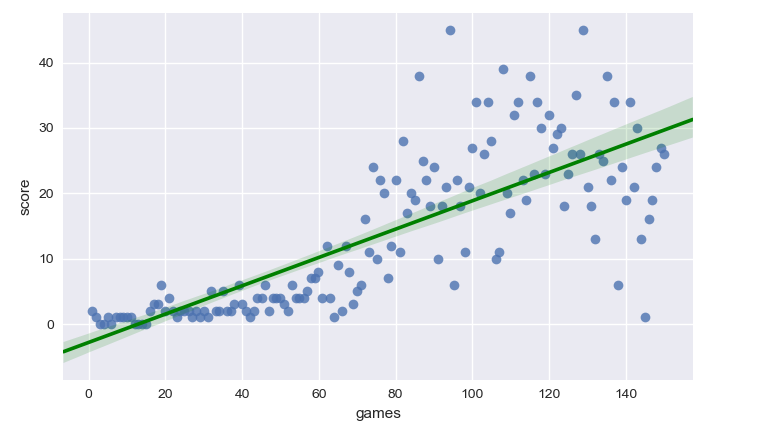

Deep Reinforcement Learning for Game Bot

Introduction
The goal of this project is to develop an AI agent that is able to learn how to play the popular game Snake from scratch. To do so, I implemented a Deep Reinforcement Learning algorithm. This approach consists in the interaction between two components: an environment (the game itself) and an agent (Snake). The agent collects information about its current state (we will see later what this means) and performs an action accordingly. The environment rewards or punishes the agent based on the performed action. Over time, the agent learns what actions maximize the reward (in our case, what actions lead to eating the apple and avoiding the walls). No rules about the game are given. Initially, Snake does not know what to do and performs random actions. The goal is to figure it out and elaborate a strategy (technically called "policy") to maximize the score - or the reward.We are going to see how a Deep Q-Learning algorithm learns how to play Snake, scoring up to 50 points and showing a solid strategy in just 5 minutes.
Optionally, the code shows how to optimize the artificial neural networks parameters using Bayesian Optimization. This procedure is not necessary, but I want to mention it for the advanced readers. You can check the GitHub Repository
Check full code Here you can see the two games: on the left, the AI before training. On the right, the AI after training.


Learning goals
- Understand and Implement a Deep Q-Learning algorithm for optimization
- Improve the algorithm with different strategies -> Store long-term memory, Experience memory, Random actions
How does it work?
In my implementation, I used Deep Q-Learning instead of a traditional supervised Machine Learning approach. What's the difference? Traditional ML algorithms need to be trained with an input and a "correct answer" called target. The system tries to learn how to predict the target from new input. In this example, we don't know the best action to take at each state of the game (this is actually what we are trying to learn!), so a traditional approach would not be effective. This is why we use Reinforcement Learning.
Reinforcement Learning in a nutshell
Reinforcement Learning is a family of algorithms and techniques used for Control (e.g. Robotics, Autonomous driving, etc..) and Decision making. These approaches solve problems that need to be expressed as a Markov Decision Process (MDP). What does this mean? A Markov Decision Process is a framework described by a set of states \(\mathcal{S}\) (for example, an index based on Snake's position), a set of actions \(\mathcal{A}\) (for example, Up, Down, Right, Left), a reward function \(\mathcal{R}\) (for example, +10 when Snake eats an apple, -10 when Snakes hits a wall) and optionally a transition function \(\mathcal{T}\) that describes the transitions among states. To use Reinforcement Learning, we need to formalize our problem using these 4 components. If this is confusing, fear not, everything will be clear in a few minutes.
In Reinforcement Learning, we have two main components: the environment (our game) and the agent (our Snake.. or to be correct, the Deep Neural Network that drives our Snake's actions). Every time the agent performs an action, the environment gives a reward to the agent, which can be positive or negative depending on how good the action was from that specific state. The goal of the agent is to learn what actions maximize the reward, given every possible state. States are the observations that the agent receives at each iteration from the environment. A state can be its position, its speed, or whatever array of variables describes the environment. To be more rigorous and to use a Reinforcement Learning notation, the strategy used by the agent to make decisions is called policy. On a theoretical level, a policy is a mapping from the state space (the space of all the possible observations that the agent can receive) into the action space (the space of all the actions the agent can take, say UP, DOWN, LEFT and RIGHT). The optimal agent can generalize over the entire state space to always predict the best possible action.. even for those situations that the agent has never seen before! If this is not clear, the next example will clarify your doubts.
How does the agent take decisions?
To understand how the agent takes decisions, it is very important to understand what a Q-Table is. A Q-table is a matrix that relates the state of the agent to the possible actions that it can take. The values in the table are the actions' probability of success (technically, a measure of the expected cumulative reward), which were updated based on the rewards the agent received during training. An example of a greedy policy is a policy where the agent looks up the table and selects the action that leads to the highest score.| State | Right | Left | Up | Down |
|---|---|---|---|---|
| 1 | 0 | 0.31 | 0.12 | 0.87 |
| 2 | 0.98 | -0.12 | 0.01 | 0.14 |
| 3 | 1 | 0.10 | 0.12 | 0.31 |
| 4 | 0.19 | 0.14 | 0.87 | -0.12 |
Representation of a Q-Table
Deep Q-Learning increases the potentiality of Q-Learning by "converting" the Q-matrix into a Neural Network - a powerful representation of a parametrized function.
The Q-values are updated according to the Bellman equation:

On a general level the algorithm works as follow:
- The game starts, and the Q-value is randomly initialized.
- The system gets the current state s.
- The agent executes an action based on the collected state. The action can either be random or returned by its neural network. During the first phase of the training, the system often chooses random actions to maximize exploration. Later on, the system relies more and more on its neural network.
- When the AI chooses and performs the action, the environment attributes a reward. It now gets the new state state' and it updates its Q-value with the Bellman equation as mentioned above. Also, for each move it stores the original state, the action, the state reached after performed that action, the reward obtained and whether the game ended or not. This data is later sampled to train the neural network.
- These last two operations are repeated until a certain condition is met
State
A state is the representation of a situation in which the agent finds itself. The state represents the input of the Neural network of the AI.In our case, the state is an array containing 11 boolean variables. It takes into account:
- if there's an immediate danger in the snake's proximity (right, left and straight).
- if the snake is moving up, down, left or right.
- if the food is above, below, on the left or on the right.
Loss
The Deep neural network optimizes the answer (action) to a specific input (state) while trying to maximize the reward. The value to express how good is the prediction is called Loss. The job of a neural network is to minimize the loss, reducing then the difference between the real target and the predicted one. In our case, the loss is expressed as: $$ loss = \left( r + \gamma max_a \textcolor{red}{\hat{Q}}(s, a') - \textcolor{red}{Q}(s, a) \right)^2 $$Reward
As said, the AI tries to maximize the reward. We positively reward the agent when it eats the food target (+10). If Snake hits a wall or hits itself, we punish the agent with a negative reward (-10). Additionally, we could give a positive reward for each step Snake takes without dying. In that case, Snake might exploit the situation by running in a circle instead of reaching the food, since it would get positive rewards for each step while avoiding the risk of collision against a wall. Sometimes, Reinforcement Learning agents outsmart us, presenting flaws in our strategy that we did not anticipate.Deep Neural Network
The brain of our Artificial Intelligence agent uses Deep learning. It consists of 3 hidden layers of 120 neurons, and three Dropout layers to optimize generalization while reducing overfitting. The learning rate is not fixed, it starts at 0.0005 and decreases to 0.000005. Different architectures and different hyper-parameters contribute to a quicker convergence to an optimum, as well as possible highest scores.The network receives as input the state, and returns as output three values related to the three actions: move left, move right, move straight. The last layer uses the Softmax function.

Final results
At the end of the implementation, the AI scores 40 points on average in a 20x20 game board (each fruit eaten rewards one point). The record is 83 points.To visualize the learning process and how effective the approach of Deep Reinforcement Learning is, I plot scores along the matches. As we can see in the graph below, during the first 50 games the AI scores poorly (less than 10 points on average). This is expected: the system is taking random actions to explore the board and store many different states, actions, and rewards in its memory. During the last 50 games, the agent does not take random actions anymore, but it only chooses the best actions according to its policy.
In only 150 games - less than 5 minutes - the agent learnt a solid strategy and scored 45 points!